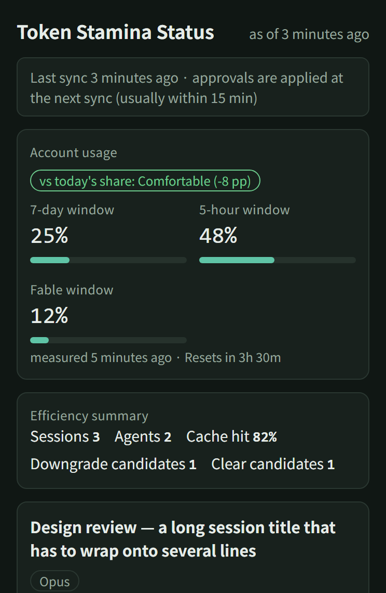
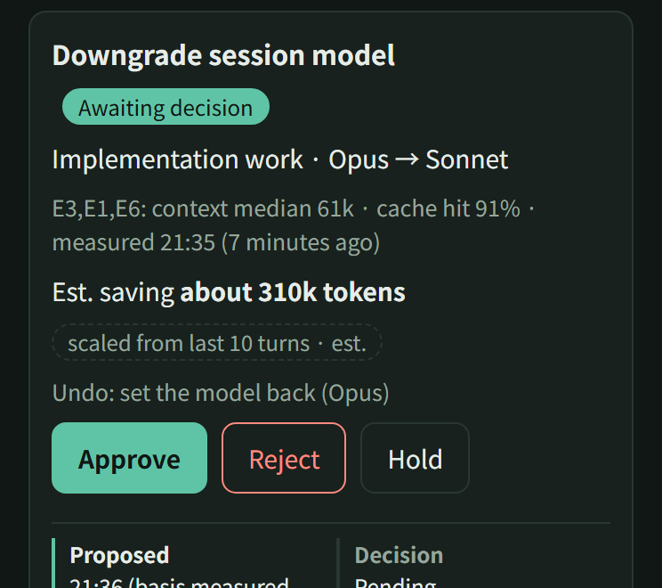

A Claude Code plugin that compares your usage with the time left. When you run ahead, it moves subagents to cheaper models, suggests a compact at the right moment, and keeps a handoff note so you don't lose your place.
claude plugin marketplace add token-stamina/token-stamina
claude · ~/work/api
> refactor the billing client and add tests
✓ 4 files edited · committed "split billing client"
~/work/api main │7d 62%·today 5.4%·reset Mon 15:00·ctx 41%
Always on, at any grade: a handoff note saved at the end of each turn and restored after a compact or clear, and a /compact suggestion when the conversation gets long.
01What it does
Subagent model
auto
When you run ahead of pace, subagents with no model set move to Haiku or Sonnet.
More
While the grade is red, a subagent call with no model set goes to Haiku if the task looks simple and to Sonnet otherwise. When several subagents or sessions are running at once, yellow is enough. A call that names a model, is a fork, or looks like review or design work is never changed: at most Claude gets a suggestion. You can change this to suggestions only, or turn it off.
Handoff note
auto
Saves where you were at the end of every turn and brings it back after a compact or clear.
More
At the end of each turn it saves the last few requests, commits, edited files and to-dos, and adds them to the new conversation after you compact or clear. The note is put together from your transcript; no model writes it. You can compact early and not have to explain again where you were.
Compact suggestion
suggestion
Suggests /compact right after you finish something in a long conversation.
More
Once the conversation is large and you've just finished something (a commit, an edit, an answer), it suggests /compact with the commit subjects filled in. If the conversation is much larger than that, it suggests a new session instead.
Auto-compact point
set once
Setup can move Claude Code's automatic compact earlier, so long sessions re-read less.
More
Setup can lower Claude Code's automatic compact point, so a long session doesn't keep re-reading a very large context on every call.
Grade change
once
One short line when the grade changes, in your language. Nothing while it stays the same.
More
When the grade changes, Claude gets one short line and tells you, in your language. Nothing is added while the grade stays the same.
Desktop app
optional
Records the app's usage figures. A private board puts every session on one page.
More
The desktop app has no status line, so when the saved usage is more than six hours old, Claude is asked once per session to read the app's own usage figures and record them. An efficiency board (preview) puts all your sessions on one private page and lets you approve or reject its suggestions from your phone.
It doesn't change your main conversation's model or block requests. It doesn't compact by itself either: Claude Code doesn't let plugins run /compact. /token-stamina:audit lists what gets loaded into every conversation, such as CLAUDE.md files, plugins and MCP servers you never use. It only reports and doesn't change anything.
02How the grade works
The status line shows the numbers Claude Code already passes to it, plus the grade.
what you can use per day from now and still make it to the reset
●
grade: green, yellow or red
reset Mon 15:00
when the weekly window resets
ctx 41%
how full this conversation is
60% used with a day left is fine. 60% used on day two isn't. So the grade compares usage with time. Green if usage is at or below the share of the window that's gone. Yellow if it's up to 10 points over. Red if it's more than 10 points over, or at 90% or more at any point. The weekly and 5-hour windows are graded separately and you see the worse one.
03Install
1In a terminal, add the marketplace:
claude plugin marketplace add token-stamina/token-stamina
2Then install the plugin (adding the marketplace alone doesn't install it):
claude plugin install token-stamina@token-stamina
3Start a new Claude Code session (sessions already open don't see the plugin). Claude offers to run setup once; say yes, or run it yourself:
/token-stamina:setup
A plugin can't set the status line by itself, so setup asks before it changes ~/.claude/settings.json. If you already have a status line, it can keep yours and add to it.
Or do steps 1 and 2 inside Claude Code
Run these one at a time, then start a new session and run setup:
desktop app · preview All your sessions on one private page, on your phone too. Nothing changes until you approve it.

Usage, then each session: context, cache hits, subagents.

A suggestion with its estimated saving. Approve, reject or hold.
Demo data.
1Ask Claude in the desktop app to publish dashboard/index.html from the plugin folder as an Artifact with the db capability.
2Put its link in dashboardUrl in ~/.claude/token-stamina/config.json.
3In a separate Haiku session, refresh it every 15 minutes:
/loop 15m /token-stamina:board
05What runs on your machine
Reads
The usage numbers Claude Code passes to the status line, and your session transcripts under ~/.claude/projects, to add up usage and build the handoff note, and the subagent files Claude Code keeps there, to count what is running.
Writes
Only to ~/.claude/token-stamina/, and to your settings file during setup if you agree. Handoff notes are deleted after seven days. The optional board is the one feature that sends data off your machine: when you run it, Claude writes the board rows (numbers, model names, the last folder name of each session's working folder, and session titles unless you hide them) and your usage percentages to your own private Artifact on claude.ai.
Never
Its scripts send no telemetry and call no model. Their only network request is the update check: once a day at most, one download of the published version number from GitHub, so it can tell you when a new version is out ("updateCheck": false turns it off). Two commands it can start may go online: claude plugin list during an audit, and a status line command you've asked it to wrap. Hint lines and handoff notes it adds to the conversation are sent to the model like the rest of your conversation.
The full file-by-file list is in the README. To remove everything, uninstall the plugin and delete that folder.
Token Stamina is free. If it saved you a few tokens, you can buy me a coffee.
Token Stamina is an independent community project. It is not affiliated with, endorsed by or sponsored by Anthropic. "Claude" and "Claude Code" are trademarks of Anthropic, PBC, used here only to say what the plugin works with. The 7d and 5h figures come from Claude Code; the grade, the per-day share and any savings figure are local estimates, not billing.